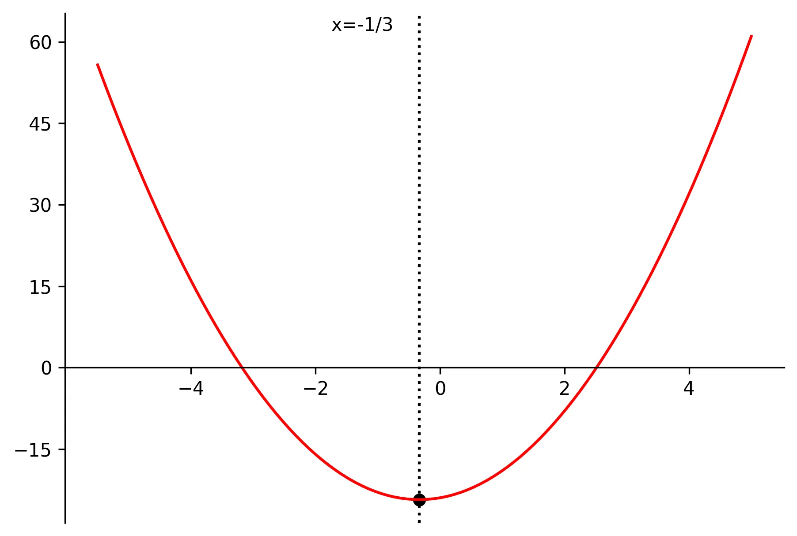
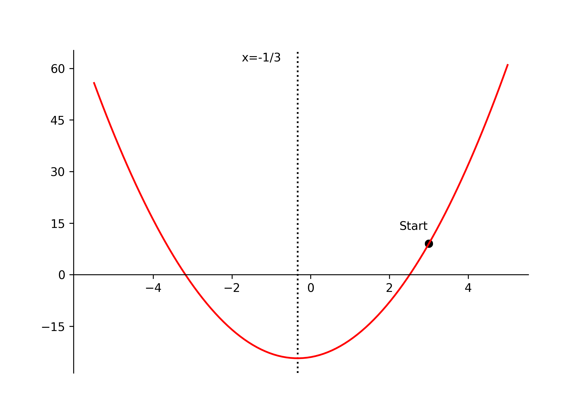
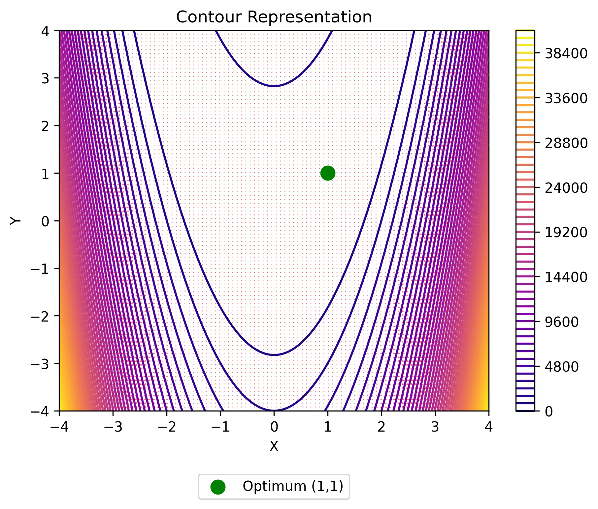

Imports and Settings
# Relevant Imports
import matplotlib.pyplot as plt
from matplotlib import animation
import plotly.graph_objects as go
import numpy as np
import sympy as sm# Relevant Imports
import matplotlib.pyplot as plt
from matplotlib import animation
import plotly.graph_objects as go
import numpy as np
import sympy as smThis article is the 1st in a 3 part series. In the 1st part, we will be studying basic optimization theory. Then, in pt. 2, we will be extending this theory to constrained optimization problems. Lastly, in pt. 3, we will apply the optimization theory covered to solve a simple profit maximization problem.
Mathematical optimization is an extremely powerful field of mathematics the underpins much of what we, as data scientists, implicitly, or explicitly, utilize on a regular basis — in fact, nearly all machine learning algorithms make use of optimization theory to obtain model convergence. Take, for example, a classification problem, we seek to minimize log-loss by choosing the optimal parameters or weights of the model. In general, mathematical optimization can be thought of as the primary theoretical mechanism by which machines learn. A robust understanding of mathematical optimization is an extremely beneficial skillset to have in the data scientists toolbox — it enables the data scientist to have a deeper understanding of many of the algorithms used today and, furthermore, to solve a vast array of unique optimization problems.
Many of the readers may be familiar with gradient descent, or related optimization algorithms such as stochastic gradient descent. However, this post will discuss in more depth the classical Newton method for optimization, sometimes referred to as the Newton-Raphson method. Note that gradient descent, and it’s various flavors, are overwhelmingly leveraged for many ML/AI algorithms due to it’s efficiency & computationally tractability. We will, nevertheless, develop the mathematics behind optimization theory from the basics to gradient descent and then dive more into Newton’s method with implementations in python. This will serve as the necessary preliminaries for our excursion into constrained optimization in part 2 and an econometric profit-maximization problem in part 3 of this series.
Mathematical optimization can be defined “as the science of determining the best solutions to mathematically defined problems.”1 This may be conceptualized in some real-world examples as: choosing the parameters to minimize a loss function for a machine learning algorithm, choosing price and advertising to maximize profit, choosing stocks to maximize risk-adjusted financial return, etc. Formally, any mathematical optimization problem can be formulated abstractly as such:
\[ \begin{equation} \begin{aligned} \min_{\mathbf{x}} \quad& f(\mathbf{x}), \mathbf{x}=[x_1,x_2,\dots,x_n]^T \in \mathbb{R}^n \\ \text{subject to} \quad & g_j(\mathbf{x}) \le 0, j=1,2,\dots,m \\ & h_j(\mathbf{x}) = 0, j=1,2,\dots,r \end{aligned} \tag{1} \end{equation} \]
This can be read as follows: Choose real values of the vector \(\mathbf{x}\) that minimize the objective function \(f(x)\) (or maximize \(-f(x)\)) subject to the inequality constraints \(g(x)\) and equality constraints \(h(x)\). We will be addressing how to solve for constrained optimization problems in part 2 of this series — as they can make the optimization problems particularly non-trivial. For now, let’s look at an unconstrained single variable example — consider the following optimization problem:
\[ \begin{equation} \min_x 3x^2+2x-24 \tag{2} \end{equation} \]
In this case, we want to choose the value of \(x\) that minimizes the above quadratic function. There are multiple ways we can go about this — first, a naïve approach would be to do a grid search iterating over a large range of \(x\) values and choose \(x\) where \(f(x)\) has the lowest functional value. However, this approach can quickly lose computational tractability as the search space increases, the function becomes more complex, or the dimensions increase.
Alternatively, we can solve directly using calculus if a closed-form solution exists. That is, we can solve analytically for the value of \(x\). By taking the derivative (or, as covered later, the gradient in higher dimensions) and setting it equal to 0 — the first order necessary condition for a relative minimum — we can solve for the relative extrema of the function. We can then take the second derivate (or, as covered later, the Hessian in higher dimensions) to determine whether this extrema is a maximum or minimum. A second derivative greater than 0 (or a positive definite Hessian) — the second order necessary condition for a relative minimum — implies a minimum and vice-versa. Observe:
\[ \begin{equation} \begin{aligned} &\frac{d}{dx}(3x^2+2x-24)=0 \Rightarrow 6x+2=0 \Rightarrow x^*=-\frac{1}{3} \\ &\frac{d^2}{dx^2}(3x^2+2x-24)=6 > 0 \Rightarrow \text{minimum} \end{aligned} \tag{3} \end{equation} \]
We can verify this graphically for (2) above:
x = np.linspace(-5.5, 5, 100)
y = 3 * x**2 + 2 * x - 24
# setting the axes at the centre
fig = plt.figure()
ax = fig.add_subplot(1, 1, 1)
# ax.spines['left'].set_position('zero')
ax.spines["bottom"].set_position("zero")
ax.spines["right"].set_color("none")
ax.spines["top"].set_color("none")
ax.xaxis.set_ticks_position("bottom")
# ax.yaxis.set_ticks_position('right')
ax.set_yticks([60, 45, 30, 15, 0, -15])
ax.set_xticks([-4, -2, 0, 2, 4])
ax.text(x=-1.75, y=62, s="x=-1/3")
ax.axvline(x=-1 / 3, linestyle=":", color="black")
# plot the function
plt.scatter(-1 / 3, 3 * (-1 / 3) ** 2 + 2 * (-1 / 3) - 24, c="black")
plt.plot(x, y, "r")
plt.savefig("data/parabola_viz.webp", format="webp", dpi=300, bbox_inches='tight')
7Note that when multiple extrema of a function exist (i.e., multiple minimums or maximums), care must be taken to determine which is the global extrema — we will briefly discuss this issue further in this article.
The analytical approach demonstrated above can be extended into higher dimensions utilizing gradients and Hessians — however, we will not be solving the closed-form solutions in higher dimensions — the intuition, however, remains the same. We will, nevertheless, be solving higher dimensional problems utilizing iterative schemes. What do I mean by iterative schemes? In general, a closed form (or analytical) solution may not exist, and certainly need not exist for a maximum or minimum to exist. Thus, we require a methodology to numerically solve the optimization problem. This leads us to the more generalized iterative schemes including gradient descent and the Newton methods.
In general, there are three main categories of iterative optimization schemes. Namely, zero-order, first-order, and second-order, which make use of local information about the function from no derivatives, first derivatives, or second derivatives, respectively.2 In order to use each iterative scheme, the function \(f(x)\) must be a continuous & differentiable function to the respective degree.
Zero-order iterative schemes are closely aligned with the grid-search as mentioned above — simply, you search over a certain range possible values of the value \(\mathbf{x}\) to obtain the minimum functional value. As you likely suspect, these methods tend to be much more computationally expensive than methods that utilize higher orders. Needless to say, they can be reliable and easy to program. There are methodologies out there that improve upon the simple grid-search, see 3 for more information; however, we will be focusing more-so on the higher-order schemes.
First-order iterative schemes are iterative schemes that utilize local information of the first derivatives of the objective function. Most notably, gradient descent methods fall under this category. For a single variable function as above, the gradient is just the first derivative. Generalizing this to \(n\) dimensions, for a function \(f(x)\), the gradient is the vector of first order partial derivatives:
\[ \begin{equation} \nabla f(\mathbf{x})= \begin{bmatrix} \frac{\partial f}{\partial x_1} \\[6pt] \frac{\partial f}{\partial x_2} \\[6pt] \vdots \\[6pt] \frac{\partial f}{\partial x_n} \end{bmatrix} \tag{4} \end{equation} \]
Gradient descent begins by choosing a random starting point and iteratively taking steps in the direction of the negative gradient of \(f(\mathbf{x})\) — the steepest direction of the function. Each iterative step can be represented as follows:
\[ \begin{equation} \mathbf{x}_{k+1}=\mathbf{x}_k-\gamma \nabla f(\mathbf{x}_k) \tag{5} \end{equation} \]
where \(\gamma\) is the respective learning rate, which controls how fast or slow the gradient descent algorithm “learns” at each iteration. Too large and our iterations can diverge uncontrollably. Too small and the iterations can take forever to converge. This scheme is conducted iteratively until any one or more convergence criteria is achieved, such as:
\[ \begin{equation} \begin{aligned} &\text{Criteria 1: } \lVert \mathbf{x}_k - \mathbf{x}_{k-1} \rVert < \epsilon_1 \\[6pt] &\text{Criteria 2: } \lvert f(\mathbf{x}_k) - f(\mathbf{x}_{k-1}) \rvert < \epsilon_2 \end{aligned} \tag{6} \end{equation} \]
for some small epsilon threshold. Referring back to our quadratic example, setting our initial guess to \(x = 3\) and the learning rate \(\gamma = 0.1\), the steps would look as follows:
\[ \begin{equation} \begin{aligned} & x_0 = 3, \quad \gamma = 0.1, \quad \nabla f(x) = \frac{d}{dx} f(x) = 6x + 2 \\[8pt] & x_1 = x_0 - \gamma \nabla f(x_0) = 3 - 0.1(6 \times 3 + 2) = 1 \\[6pt] & x_2 = x_1 - \gamma \nabla f(x_1) = 1 - 0.1(6 \times 1 + 2) = 0.2 \\[6pt] & x_3 = x_2 - \gamma \nabla f(x_2) = 0.2 - 0.1(6 \times 0.2 + 2) = -0.12 \\[6pt] & \vdots \\[6pt] & x^* = x_n \approx -0.33 \approx -\frac{1}{3} \end{aligned} \tag{7} \end{equation} \]
And visually, with algorithmic output (functions will be discussed later in article):
def get_gradient(
function: sm.Expr,
symbols: list[sm.Symbol],
x0: dict[sm.Symbol, float], # Add x0 as argument
) -> np.ndarray:
"""
Calculate the gradient of a function at a given point.
Args:
function (sm.Expr): The function to calculate the gradient of.
symbols (list[sm.Symbol]): The symbols representing the variables in the function.
x0 (dict[sm.Symbol, float]): The point at which to calculate the gradient.
Returns:
numpy.ndarray: The gradient of the function at the given point.
"""
d1 = {}
gradient = np.array([])
for i in symbols:
d1[i] = sm.diff(function, i, 1).evalf(subs=x0) # add evalf method
gradient = np.append(gradient, d1[i])
return gradient.astype(np.float64) # Change data type to float
def gradient_descent(
function: sm.Expr,
symbols: list[sm.Symbol],
x0: dict[sm.Symbol, float],
learning_rate: float = 0.1,
iterations: int = 100,
) -> dict[sm.Symbol, float] or None:
"""
Performs gradient descent optimization to find the minimum of a given function.
Args:
function (sm.Expr): The function to be optimized.
symbols (list[sm.Symbol]): The symbols used in the function.
x0 (dict[sm.Symbol, float]): The initial values for the symbols.
learning_rate (float, optional): The learning rate for the optimization. Defaults to 0.1.
iterations (int, optional): The maximum number of iterations. Defaults to 100.
Returns:
dict[sm.Symbol, float] or None: The solution found by the optimization, or None if no solution is found.
"""
x_star = {}
x_star[0] = np.array(list(x0.values()))
x = [] ## Return x for visual!
print(f"Starting Values: {x_star[0]}")
for i in range(iterations):
x.append(dict(zip(x0.keys(), x_star[i]))) ## Return x for visual!
gradient = get_gradient(function, symbols, dict(zip(x0.keys(), x_star[i])))
x_star[i + 1] = x_star[i].T - learning_rate * gradient.T
if np.linalg.norm(x_star[i + 1] - x_star[i]) < 10e-5:
solution = dict(zip(x0.keys(), x_star[i + 1]))
print(
f"\nConvergence Achieved ({i+1} iterations): Solution = {solution}"
)
break
else:
solution = None
print(f"Step {i+1}: {x_star[i+1]}")
return solution, x
# Gradient Descent
x = sm.symbols("x")
objective = 3 * x**2 + 2 * x - 24
symbols = [x]
x0 = {x: 3}
_, x_iterations = gradient_descent(objective, symbols, x0, iterations=20)
# Defining surface and axes
x = np.linspace(-5.5, 5, 100)
y = 3 * x**2 + 2 * x - 24
# setting the axes at the centre
fig = plt.figure()
ax = fig.add_subplot(1, 1, 1)
# ax.spines['left'].set_position('zero')
ax.spines["bottom"].set_position("zero")
ax.spines["right"].set_color("none")
ax.spines["top"].set_color("none")
ax.xaxis.set_ticks_position("bottom")
# ax.yaxis.set_ticks_position('right')
ax.set_yticks([60, 45, 30, 15, 0, -15])
ax.set_xticks([-4, -2, 0, 2, 4])
ax.text(x=-1.75, y=62, s="x=-1/3")
ax.text(x=2.25, y=13, s="Start")
ax.axvline(x=-1 / 3, linestyle=":", color="black")
# plot the function
plt.plot(x, y, "r")
x_viz = []
y_viz = []
def animate(iterations):
x_viz.append(float([v for v in x_iterations[iterations].values()][0]))
y_viz.append(float(objective.evalf(subs=x_iterations[iterations])))
ax.scatter(x_viz, y_viz, c="black")
rot_animation = animation.FuncAnimation(
fig, animate, frames=len(x_iterations), interval=500
)
rot_animation.save("data/gradient_descent.gif", dpi=300)
Gradient descent and first-order iterative schemes are notably reliable in their performance. In fact, gradient descent algorithms are primarily utilized for optimization of loss functions in Neural Networks and ML models, and many developments have improved the efficacy of these algorithms. Nevertheless, they are still using limited local information about the function (only the first derivative). Thus, in higher dimension and depending on the nature of the objective function & the learning rate, these schemes 1) can have a slow convergence rate as they maintain a linear convergence rate and 2) may fail entirely to converge. Because of this, it is beneficial for the data scientist to expand their optimization arsenal for more complex & custom optimization problems.
As you have likely now pieced together, Second-order iterative schemes are iterative schemes that utilize local information of the first derivatives and the second derivatives of the objective function. Most notably, we have the Newton method (NM), which makes use of the Hessian of the objective function. For a single variable function, the Hessian is simply the second derivative. Similar to the gradient, generalizing this to \(n\) dimensions, the Hessian is an \(n \times n\) symmetrical matrix of the second order partial derivatives of a twice continuously differentiable function \(f(x)\):
\[ \begin{equation} \mathbf{H}(\mathbf{x})=\nabla^2 f(\mathbf{x}) = \begin{bmatrix} \frac{\partial^2 f}{\partial x_1^2} & \frac{\partial^2 f}{\partial x_1 \partial x_2} & \cdots & \frac{\partial^2 f}{\partial x_1 \partial x_n} \\[8pt] \frac{\partial^2 f}{\partial x_2 \partial x_1} & \frac{\partial^2 f}{\partial x_2^2} & \cdots & \frac{\partial^2 f}{\partial x_2 \partial x_n} \\[8pt] \vdots & \vdots & \ddots & \vdots \\[8pt] \frac{\partial^2 f}{\partial x_n \partial x_1} & \frac{\partial^2 f}{\partial x_n \partial x_2} & \cdots & \frac{\partial^2 f}{\partial x_n^2} \end{bmatrix} \tag{8} \end{equation} \]
Now moving on to derive the NM, first recall the first order necessary condition for a minimum:
\[ \begin{equation} \nabla f(\mathbf{x}^*)=0 \tag{9} \end{equation} \]
Given this, we can approximate \(\mathbf{x}^*\) using a Taylor Series expansion:
\[ \begin{equation} 0 = \nabla f(\mathbf{x}^*)=\nabla f(\mathbf{x}_k + \Delta) = \nabla f(\mathbf{x}_k) + \mathbf{H}(\mathbf{x}_k)\Delta\Rightarrow \Delta = -\mathbf{H}^{-1}(\mathbf{x}_k)\nabla f(\mathbf{x}_k) \tag{10} \end{equation} \]
Each iterative addition of \(\Delta\) is an expected better approximation of \(x^*\). Thus, each iterative step using the NM can be represented as follows:
\[ \begin{equation} \mathbf{x}_{k+1} = \mathbf{x}_k -\mathbf{H}^{-1}(\mathbf{x}_k)\nabla f(\mathbf{x}_k) \tag{11} \end{equation} \]
Referring back to our quadratic example, setting our initial guess to \(x = 3\), the steps would look as follows:
\[ \begin{equation} \begin{aligned} & x_0 = 3, \quad \nabla f(\mathbf{x}) = \frac{d}{dx} f(x) = 6x + 2, \quad \mathbf{H}(\mathbf{x}) = \frac{d^2}{dx^2} f(x) = 6 \\[8pt] & x^* = x_1 = 3 - \frac{1}{6}(6 \times 3 + 2) = 3 - \frac{20}{6} = -\frac{1}{3} \end{aligned} \tag{12} \end{equation} \]
And we, elegantly, converge to the optimal solution on our first iteration. Note, the convergence criteria is the same regardless of scheme.
Note that all of the optimization schemes suffer from the possibility of getting caught in a relative extremum, rather than the global extremum (i.e., think a higher order polynomial with multiple extrema (min’s and/or max’s)— we could get stuck in one relative extrema when, in reality, another extrema may be globally more optimal for our problem). There are methods developed, and always being developed, for dealing with global optimization, which we will not dive too deep into. You can use prior knowledge of the functional form to set expectations of what results you anticipate (i.e., If a strictly convex function has a critical point, then it must be a global minimum). Nevertheless, as a general rule of thumb, it is always wise to iterate optimization schemes over different possible starting values of x and then study the stability of results, usually picking the results with the most optimal functional values for the problem at hand.
Let’s now consider the following optimization problem of two variables:
\[ \begin{equation} \min_{\Gamma} = 100(y-x^2)^2+(1-x)^2, \Gamma= \begin{bmatrix} x \\ y \end{bmatrix} \in \mathbb{R}^2 \tag{13} \end{equation} \]
x = np.linspace(-4, 4, 100)
y = np.linspace(-4, 4, 100)
X, Y = np.meshgrid(x, y)
Z = 100 * (Y - X**2) ** 2 + (1 - X) ** 2
fig = go.Figure()
fig.add_trace(go.Surface(
z=Z, x=X, y=Y, colorscale="plasma",
colorbar=dict(x=-0.15)
))
# Add the optimum point
fig.add_trace(
go.Scatter3d(
x=[1],
y=[1],
z=[0],
mode='markers',
marker=dict(size=8, color='green', symbol='circle'),
name='Optimum (1,1)'
)
)
fig.update_layout(
title="Rosenbrock's Parabolic Valley",
scene=dict(
xaxis_title="X",
yaxis_title="Y",
zaxis_title="Z",
xaxis=dict(tickvals=list(range(-4, 5))),
yaxis=dict(tickvals=list(range(-4, 5))),
),
showlegend=True,
margin=dict(l=0, r=0, b=0, t=40),
)
fig.write_html("data/rosenbrocks_viz_3d.html")# Define the Rosenbrock function
def rosenbrock(x, y):
return 100 * (y - x**2) ** 2 + (1 - x) ** 2
# Compute gradient
def grad_rosenbrock(x, y):
df_dx = -400 * x * (y - x**2) - 2 * (1 - x)
df_dy = 200 * (y - x**2)
return df_dx, df_dy
# Define the grid
x_vals = np.linspace(-4, 4, 100)
y_vals = np.linspace(-4, 4, 100)
X, Y = np.meshgrid(x_vals, y_vals)
Z = rosenbrock(X, Y)
# Compute gradients for quiver plot
dX, dY = grad_rosenbrock(X, Y)
# Plot contours of Rosenbrock function
plt.figure(dpi=125)
contour = plt.contour(X, Y, Z, levels=50, cmap="plasma")
plt.colorbar(contour)
# Overlay gradient field
plt.quiver(X, Y, dX, dY, color="red", alpha=0.6)
# Mark the optimization point (theoretical minimum at (1,1))
plt.scatter(
1, 1, color="green", marker="o", s=100, label="Optimum (1,1)", zorder=3
)
# Labels and legend
plt.xlabel("X")
plt.ylabel("Y")
plt.title("Contour Representation")
plt.legend(loc="lower center", bbox_to_anchor=(0.5, -0.25))
plt.savefig("data/rosenbrocks_viz_contour.webp", format="webp", dpi=300, bbox_inches='tight')
We will first solve the above optimization problem first by hand and then in python, both utilizing Newton’s Method.
To solve by hand, we will need to solve for the gradient, solve for the Hessian, choose our initial guess \(\Gamma = [x, y]\), and then iterate plugging this information into the NM algorithm until convergence is achieved. First, solving for the gradient, we have:
\[ \begin{equation} \nabla f(\Gamma)= \begin{bmatrix} \frac{\partial{f}}{\partial{x}}(\Gamma) \\[6pt] \frac{\partial{f}}{\partial{y}}(\Gamma) \\ \end{bmatrix} = \begin{bmatrix} 200(y-x^2)(-2x)-2(1-x) \\[6pt] 200(y-x^2) \\ \end{bmatrix} \tag{14} \end{equation} \]
Solving for the Hessian, we have:
\[ \begin{equation} \mathbf{H}(\Gamma)= \begin{bmatrix} \frac{\partial^2{f}}{\partial{x^2}}(\Gamma) & \frac{\partial^2{f}}{\partial{x}\partial{y}}(\Gamma)\\[6pt] \frac{\partial^2{f}}{\partial{y}\partial{x}}(\Gamma) & \frac{\partial^2{f}}{\partial{y^2}}(\Gamma)\\ \end{bmatrix} = \begin{bmatrix} -400y+1200x^2+2 & -400x \\[6pt] -400x & 200 \\ \end{bmatrix} \tag{15} \end{equation} \]
Setting our initial guess to \(\Gamma = [-1.2,1]\), we have:
\[ \begin{equation} \begin{aligned} \Gamma_0 &= \begin{bmatrix} -1.2 \\ 1 \end{bmatrix} \\[16pt] \Gamma_1 &= \begin{bmatrix} -1.2 \\ 1 \end{bmatrix} - \begin{bmatrix} 1330 & 480 \\ 480 & 200 \end{bmatrix}^{-1} \begin{bmatrix} -215.6 \\ -88 \end{bmatrix} &= \begin{bmatrix} -1.175 \\ 1.381 \end{bmatrix} \\[10pt] \Gamma_2 &= \begin{bmatrix} -1.175 \\ 1.381 \end{bmatrix} - \begin{bmatrix} 1107.27 & 470.11 \\ 470.11 & 200 \end{bmatrix}^{-1} \begin{bmatrix} -4.634 \\ -0.122 \end{bmatrix} &= \begin{bmatrix} 0.763 \\ -3.175 \end{bmatrix} \\[10pt] \Gamma_3 &= \begin{bmatrix} 0.763 \\ -3.175 \end{bmatrix} - \begin{bmatrix} 1970.83 & -305.25 \\ -305.25 & 200 \end{bmatrix}^{-1} \begin{bmatrix} 1146.45 \\ -751.48 \end{bmatrix} &= \begin{bmatrix} 0.763 \\ 0.583 \end{bmatrix} \\[10pt] \Gamma_4 &= \begin{bmatrix} 0.763 \\ 0.583 \end{bmatrix} - \begin{bmatrix} 468.26 & -305.37 \\ -305.37 & 200 \end{bmatrix}^{-1} \begin{bmatrix} -0.473 \\ -0.00002 \end{bmatrix} &= \begin{bmatrix} 0.999 \\ 0.944 \end{bmatrix} \\[10pt] \Gamma_5 &= \begin{bmatrix} 0.999 \\ 0.944 \end{bmatrix} - \begin{bmatrix} 824.38 & -400 \\ -400 & 200 \end{bmatrix}^{-1} \begin{bmatrix} 22.39 \\ -11.19 \end{bmatrix} &= \begin{bmatrix} 0.999 \\ 0.999 \end{bmatrix} \\[16pt] \Gamma_5 &\approx \Gamma^* = \begin{bmatrix} x^* \\ y^* \end{bmatrix} = \begin{bmatrix} 1 \\ 1 \end{bmatrix} \end{aligned} \tag{16} \end{equation} \]
Thus, we successfully solve for the optimal minimum of our objective function at \(\Gamma^* = [1,1]\).
Note, this is by no means meant to be an efficient implementation, but rather for demonstration. There are many optimization frameworks & tools that are optimized heavily for efficient implementations, such as SciPy & Pyomo.
We will now turn to solving this problem, and generalizing it to any function, in python using SymPy — a python library for symbolic mathematics. First, let’s walk through defining Rosenbrock’s parabolic valley and calculating the gradient & Hessian of the function:
# Define symbols & objective function (Rosenbrock's Parabolic Valley)
x, y = sm.symbols("x y")
Gamma = [x, y]
objective = 100 * (y - x**2) ** 2 + (1 - x) ** 2
def get_gradient_sym(
function: sm.Expr,
symbols: list[sm.Symbol],
) -> np.ndarray:
"""
Calculate the gradient of a function.
Args:
function (sm.Expr): The function to calculate the gradient of.
symbols (list[sm.Symbol]): The symbols representing the variables in the function.
Returns:
numpy.ndarray: The gradient of the function.
"""
d1 = {}
gradient = np.array([])
for i in symbols:
d1[i] = sm.diff(function, i, 1)
gradient = np.append(gradient, d1[i])
return gradient
def get_hessian_sym(
function: sm.Expr,
symbols: list[sm.Symbol],
) -> np.ndarray:
"""
Calculate the Hessian matrix of a function.
Args:
function (sm.Expr): The function for which the Hessian matrix is calculated.
symbols (list[sm.Symbol]): The list of symbols used in the function.
Returns:
numpy.ndarray: The Hessian matrix of the function.
"""
d2 = {}
hessian = np.array([])
for i in symbols:
for j in symbols:
d2[f"{i}{j}"] = sm.diff(function, i, j)
hessian = np.append(hessian, d2[f"{i}{j}"])
hessian = np.array(np.array_split(hessian, len(symbols)))
return hessianSymPy allows us to investigate the symbolic representation of our equations. For example, if we call objective , we will see the corresponding output:
objective\(\displaystyle \left(1 - x\right)^{2} + 100 \left(- x^{2} + y\right)^{2}\)
Additionally, SymPy allows us take the derivatives of the respective function utilizing the sm.diff() command. If we run our defined functions to obtain the gradient get_gradient_sym(objective,Gamma) , we obtain a numpy array representing the gradient:
get_gradient_sym(objective, Gamma)array([-400*x*(-x**2 + y) + 2*x - 2, -200*x**2 + 200*y], dtype=object)Accessing a specific element, we can see the symbolic representation get_gradient_sym(objective, Gamma)[0] :
get_gradient_sym(objective, Gamma)[0]\(\displaystyle - 400 x \left(- x^{2} + y\right) + 2 x - 2\)
Similarly, for the Hessian we can call get_hessian_sym(objective, Gamma):
get_hessian_sym(objective, Gamma)array([[2*(600*x**2 - 200*y + 1), -400*x],
[-400*x, 200]], dtype=object)Accessing a specific element get_hessian_sym(objective,Gamma)[0][1]:
get_hessian_sym(objective, Gamma)[0][1]\(\displaystyle - 400 x\)
One can easily verify that the gradient and Hessian are identical to the ones we solved out by hand. SymPy allows for the evaluation of any function given specified values for the symbols. For example, we can evaluate the gradient at our initial guess by tweaking the function as follows:
def get_gradient(
function: sm.Expr,
symbols: list[sm.Symbol],
x0: dict[sm.Symbol, float], # Add x0 as argument
) -> np.ndarray:
"""
Calculate the gradient of a function at a given point.
Args:
function (sm.Expr): The function to calculate the gradient of.
symbols (list[sm.Symbol]): The symbols representing the variables in the function.
x0 (dict[sm.Symbol, float]): The point at which to calculate the gradient.
Returns:
numpy.ndarray: The gradient of the function at the given point.
"""
d1 = {}
gradient = np.array([])
for i in symbols:
d1[i] = sm.diff(function, i, 1).evalf(subs=x0) # add evalf method
gradient = np.append(gradient, d1[i])
return gradient.astype(np.float64) # Change data type to float
def get_hessian(
function: sm.Expr,
symbols: list[sm.Symbol],
x0: dict[sm.Symbol, float],
) -> np.ndarray:
"""
Calculate the Hessian matrix of a function at a given point.
Args:
function (sm.Expr): The function for which the Hessian matrix is calculated.
symbols (list[sm.Symbol]): The list of symbols used in the function.
x0 (dict[sm.Symbol, float]): The point at which the Hessian matrix is evaluated.
Returns:
numpy.ndarray: The Hessian matrix of the function at the given point.
"""
d2 = {}
hessian = np.array([])
for i in symbols:
for j in symbols:
d2[f"{i}{j}"] = sm.diff(function, i, j).evalf(subs=x0)
hessian = np.append(hessian, d2[f"{i}{j}"])
hessian = np.array(np.array_split(hessian, len(symbols)))
return hessian.astype(np.float64)We can now compute our gradient given our starting point by calling get_gradient(objective, Gamma, {x:-1.2,y:1.0}):
get_gradient(objective, Gamma, {x: -1.2, y: 1.0})array([-215.6, -88. ])Similarly, for the Hessian get_hessian(objective, Gamma, {x:-1.2,y:1.0}):
get_hessian(objective, Gamma, {x: -1.2, y: 1.0})array([[1330., 480.],
[ 480., 200.]])Again, we can verify that these values are correct from our work by hand above._ Now we have all the ingredients necessary to code Newton’s method (the code for gradient descent is given at the end of this article as well):
def newtons_method(
function: sm.Expr,
symbols: list[sm.Symbol],
x0: dict[sm.Symbol, float],
iterations: int = 100,
tolerance: float = 10e-5,
verbose: int = 1,
) -> dict[sm.Symbol, float] or None:
"""
Perform Newton's method to find the solution to the optimization problem.
Args:
function (sm.Expr): The objective function to be optimized.
symbols (list[sm.Symbol]): The symbols used in the objective function.
x0 (dict[sm.Symbol, float]): The initial values for the symbols.
iterations (int, optional): The maximum number of iterations. Defaults to 100.
tolerance (float, optional): Threshold for determining convergence.
verbose (int, optional): Control verbosity of output. 0 is no output, 1 is full output.
Returns:
dict[sm.Symbol, float] or None: The solution to the optimization problem, or None if no solution is found.
"""
x_star = {}
x_star[0] = np.array(list(x0.values()))
if verbose != 0:
print(f"Starting Values: {x_star[0]}")
for i in range(iterations):
gradient = get_gradient(function, symbols, dict(zip(x0.keys(), x_star[i])))
hessian = get_hessian(function, symbols, dict(zip(x0.keys(), x_star[i])))
x_star[i + 1] = x_star[i].T - np.linalg.inv(hessian) @ gradient.T
if np.linalg.norm(x_star[i + 1] - x_star[i]) < tolerance:
solution = dict(zip(x0.keys(), [float(x) for x in x_star[i + 1]]))
if verbose != 0:
print(
f"\nConvergence Achieved ({i+1} iterations): Solution = {solution}"
)
break
else:
solution = None
if verbose != 0:
print(f"Step {i+1}: {x_star[i+1]}")
return solutionWe can now run the code via newtons_method(objective,Gamma,{x:-1.2,y:1}):
_ = newtons_method(objective, Gamma, {x: -1.2, y: 1})Starting Values: [-1.2 1. ]
Step 1: [-1.1752809 1.38067416]
Step 2: [ 0.76311487 -3.17503385]
Step 3: [0.76342968 0.58282478]
Step 4: [0.99999531 0.94402732]
Step 5: [0.9999957 0.99999139]
Convergence Achieved (6 iterations): Solution = {x: 0.9999999999999999, y: 0.9999999999814724}There you have it! If you have made it up to this point, you now have a robust understanding of how to think about and abstractly formulate unconstrained mathematical optimization problems, along with the basic analytical approach and the more complex iterative methods for solving such problems. It is clear that the more information that we can incorporate about the function in the iterative schemes (i.e., higher order derivatives), the more efficient the convergence rate. Note that we are just brushing the surface of the complex world that is mathematical optimization. Nevertheless, the tools we have discussed today can absolutely be utilized in practice and extended to higher dimensional optimization problems.
Stay tuned for Part 2 of this series where we will extend what we have learned here to solving constrained optimization problems — which is an extremely practical extension on unconstrained optimization. In fact, most real world optimization problems will have some form of constraints on the choice variables. Then we will shift to Part 3 of this series where we will apply the optimization theory learned and additional econometric & economic theory to solve a simple example of profit maximization problem. I hope you have enjoyed reading this as much as I have enjoyed writing it!
Despite the attractiveness of Newton’s method, it is not without its own pitfalls. Notably, two main pitfalls exists — 1) NM is not always convergent even when choosing starting points near the solution & 2) NM requires the computation of the Hessian matrix at each step which can be computationally very expensive in higher dimensions. For pitfall #1), a respective solution is the Modified Newton method (MNM), which can be loosely thought of as gradient descent where the search direction is given by the Newton step, Δ. For pitfall #2), quasi-Newton methods, such as DFP or BFGS, have been proposed that approximate the inverse-Hessian used at each step to improve computational burden. For more information see, 4.
def gradient_descent(
function: sm.Expr,
symbols: list[sm.Symbol],
x0: dict[sm.Symbol, float],
learning_rate: float = 0.1,
iterations: int = 100,
) -> dict[sm.Symbol, float] or None:
"""
Performs gradient descent optimization to find the minimum of a given function.
Args:
function (sm.Expr): The function to be optimized.
symbols (list[sm.Symbol]): The symbols used in the function.
x0 (dict[sm.Symbol, float]): The initial values for the symbols.
learning_rate (float, optional): The learning rate for the optimization. Defaults to 0.1.
iterations (int, optional): The maximum number of iterations. Defaults to 100.
Returns:
dict[sm.Symbol, float] or None: The solution found by the optimization, or None if no solution is found.
"""
x_star = {}
x_star[0] = np.array(list(x0.values()))
x = [] ## Return x for visual!
print(f"Starting Values: {x_star[0]}")
for i in range(iterations):
x.append(dict(zip(x0.keys(), x_star[i]))) ## Return x for visual!
gradient = get_gradient(function, symbols, dict(zip(x0.keys(), x_star[i])))
x_star[i + 1] = x_star[i].T - learning_rate * gradient.T
if np.linalg.norm(x_star[i + 1] - x_star[i]) < 10e-5:
solution = dict(zip(x0.keys(), x_star[i + 1]))
print(
f"\nConvergence Achieved ({i+1} iterations): Solution = {solution}"
)
break
else:
solution = None
print(f"Step {i+1}: {x_star[i+1]}")
return solution, xAccess all the code via this GitHub Repo.
I appreciate you reading my post! My posts primarily explore real-world and theoretical applications of econometric and statistical/machine learning techniques, but also whatever I am currently interested in or learning 😁. At the end of the day, I write to learn! I hope to make complex topics slightly more accessible to all.Snyman, J. A., & Wilke, D. N. (2019). Practical mathematical optimization: Basic optimization theory and gradient-based algorithms (2nd ed.). Springer.↩︎
Snyman, J. A., & Wilke, D. N. (2019). Practical mathematical optimization: Basic optimization theory and gradient-based algorithms (2nd ed.). Springer.↩︎
Snyman, J. A., & Wilke, D. N. (2019). Practical mathematical optimization: Basic optimization theory and gradient-based algorithms (2nd ed.). Springer.↩︎
Snyman, J. A., & Wilke, D. N. (2019). Practical mathematical optimization: Basic optimization theory and gradient-based algorithms (2nd ed.). Springer.↩︎